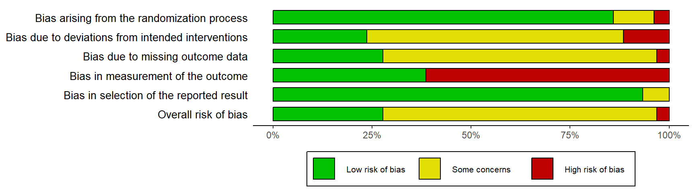

请引用本章如下：
McGuinness, L. A. (2021). 偏倚风险图。见 Harrer, M., Cuijpers, P., Furukawa, T.A., & Ebert, D.D., 使用 R 进行 Meta 分析：实操指南 (在线版本). bookdown.org/MathiasHarrer/Doing_Meta_Analysis_in_R/rob-plots.html.偏倚风险图
作者：Luke A. McGuinness
在本章中，我们将介绍如何使用 {robvis} 包在 R 中创建偏倚风险图。
引言
作为系统评价和 Meta 分析的一部分，您可能还需要使用相关的 基于领域的偏倚风险评估工具 检查纳入研究的内部有效性（偏倚风险），并以图形格式呈现此评估的结果。
Cochrane 手册推荐两种类型的图形：一种是汇总条形图，显示每个领域中具有给定偏倚风险判断的研究比例；另一种是交通灯图，显示每个研究的领域级别判断。
然而，研究人员在创建这些图形时可用的选项有限。虽然 RevMan 具有创建图的功能，但许多研究人员不使用它来进行系统评价，因此将相关数据复制到系统中是一种低效的解决方案。
同样，使用 MS PowerPoint 等软件手动制作图表既耗时，又意味着如果需要更改，则必须手动更新图表。此外，期刊通常要求图表具有出版质量（高于约 300-400dpi），这在从 RevMan 导出偏倚风险图或手动创建它们时很难实现。

为了避免所有这些，您现在可以使用 {robvis} 包 [@mcguinness2020risk; @robvis] 在 R Studio 中轻松绘制偏倚风险图，该包提供将偏倚风险评估汇总表转换为汇总图或交通灯图的函数。
加载 {robvis}
假设您已经安装了 {dmetar} 包（参见第 @ref(dmetar) 章），请使用以下命令加载 {robvis} 包：
library(robvis)导入您的偏倚风险汇总表数据
为了生成我们的图，我们首先必须将偏倚风险评估的结果从 Excel 导入到 R 中。请注意，{robvis} 期望您提供的数据具有某些事实，因此请务必在 Excel 中设置表时遵循以下指南：
- 第一列标记为“Study”，包含研究标识符（例如，Anthony et al, 2019）
- 倒数第二列标记为“Overall”，包含总体偏倚风险判断
- 最后一列标记为“Weight”，包含研究精确度的一些度量，例如 Meta 分析中分配给每个研究的权重，或者如果没有进行 Meta 分析，则包含每个研究的样本量。有关更多详细信息，请参见第 @ref(fem) 章。
- 所有其他列包含特定领域的偏倚风险评估结果。
为了详细说明上述指南，以具有 5 个领域的 ROB2 工具为例。 {robvis} 期望的最终数据集将具有 8 列：
- 第 1 列：研究标识符
- 第 2-6 列：每列一个 RoB2 领域
- 第 7 列：总体偏倚风险判断
- 第 8 列：权重。
在 Excel 中，此偏倚风险汇总表如下所示：

列名
对于四个工具模板中的三个（ROB2、ROBINS-I、QUADAS-2），包含领域级别判断的列的名称并不重要，因为 robvis 中的模板将使用正确的工具特定标题重新标记每个领域。
将您在 Excel 中创建的表格以逗号分隔文件（例如“robdata.csv”）保存到工作目录后，您可以使用以下命令以编程方式将文件读取到 R 中，或者通过第 @ref(data-prep-R) 章中描述的“导入助手”方法。
my_rob_data <- read.csv("robdata.csv", header = TRUE)模板
{robvis} 通过使用您提供的数据来填充特定于您使用的偏倚风险评估工具的模板图来生成偏倚风险图。目前，{robvis} 包含以下三个工具的模板：
- ROB2，用于随机对照试验的新的 Cochrane 偏倚风险工具；
- ROBINS-I，非随机研究中的偏倚风险 - 干预工具；
- QUADAS-2，诊断准确性研究的质量和适用性，第 2 版。
{robvis} 还包含一个特殊的通用模板，标记为 ROB1。它设计用于原始 Cochrane 随机对照试验偏倚风险工具，也可用于可视化使用上面列表中未包含的其他基于领域的工具进行的评估结果。有关使用此模板时所需其他步骤的更多信息，请参见第 @ref(rob1-template) 章。
示例数据集
{robvis} 包包含上面概述的每个模板的示例数据集。这些存储在以下对象中：
data_rob2：ROB2 工具的示例数据data_robins：ROBINS-I 工具的示例数据data_quadas：QUADAS-2 工具的示例数据data_rob1：RoB-1 工具的示例数据。
您可以使用 glimpse 函数探索这些数据集（参见第 @ref(class-conversion) 章）。例如，使用 library(robvis) 加载包后，可以通过运行以下命令查看 ROBINS-I 示例数据集：
glimpse(data_robins)Rows: 12
Columns: 10
$ Study <fct> Study 1, Study 2, Study 3, Study 4, Study 5, Study 6, Study 7,…
$ D1 <fct> Critical, Moderate, Moderate, Low, Serious, Critical, Critical…
$ D2 <fct> Low, Low, Low, Low, Serious, Serious, Moderate, Moderate, Low,…
$ D3 <fct> Critical, Low, Moderate, Serious, Low, Moderate, Moderate, Low…
$ D4 <fct> Critical, Critical, Critical, Critical, Low, Critical, Serious…
$ D5 <fct> Low, Low, Critical, Moderate, Moderate, Critical, Critical, Lo…
$ D6 <fct> Low, Moderate, Low, Low, Low, Moderate, Serious, Low, Serious,…
$ D7 <fct> Serious, Low, Serious, Critical, Moderate, Serious, Serious, C…
$ Overall <fct> Critical, Low, Serious, Low, Serious, Serious, Moderate, Moder…
$ Weight <dbl> 33.3333333, 33.3333333, 0.1428571, 9.0909091, 12.5000000, 25.0…这些示例数据集用于创建本指南其余部分中介绍的图。
汇总图
基础知识
一旦我们成功地将偏倚风险汇总表导入到 R 中，创建偏倚风险图就非常简单了。
首先，通过运行以下代码，使用 ROB2 示例数据集 (data_rob2) 创建一个简单的加权汇总条形图：
rob_summary(data = data_rob2,
tool = "ROB2")
修改图
rob_summary 函数具有以下参数：
data。包含汇总（领域）级别偏倚风险评估的数据框，其中第一列包含研究详细信息，第二列包含评估的第一个领域，最后一列包含分配给每个研究的权重。该函数假定数据包括一列用于总体偏倚风险。例如，ROB2.0 数据集将具有 8 列（1 列用于研究详细信息，5 列用于领域级别判断，1 列用于总体判断，1 列用于权重，按该顺序）。tool。使用的偏倚风险评估工具。目前支持 RoB2.0 ("ROB2"),"ROBINS-I"和"QUADAS-2"。overall。一个在图中包含总体偏倚风险的附加条的选项。默认为FALSE。weighted。一个指定是否应在条形图中使用权重的选项。默认值为TRUE，与当前的 Cochrane 协作指南一致。colour。一个指定图的配色方案的参数。默认值为"cochrane"，它使用无处不在的 Cochrane 颜色，而一个预设的适合色盲友好的调色板也可用 (colour = "colourblind")。quiet。一个以静默方式生成图而不显示它的逻辑选项。默认值为FALSE。
下面描述了每个参数的功能示例。
工具
一个定义您要使用的工具模板的参数。在上面的示例中，使用了 ROB2 模板。下面演示了另外两个主要模板 - ROBINS-I 和 QUADAS-2 模板：
rob_summary(data = data_robins,
tool = "ROBINS-I")rob_summary(data = data_quadas,
tool = "QUADAS-2")总体
默认情况下，图中不包含表示总体偏倚风险判断的附加条。如果您想包含它，请设置 overall = TRUE。例如：
rob_summary(data = data_rob2,
tool = "ROB2",
overall = TRUE)
加权或未加权条形图
默认情况下，条形图由研究精确度的某种度量加权，因此条形图显示的是信息的比例，而不是处于特定偏倚风险的研究的比例。此方法符合 Cochrane 手册。
您可以通过设置 weighted = FALSE 来关闭此选项，以创建未加权条形图。例如，比较以下两个图：
rob_summary(data = data_rob2,
tool = "ROB2")rob_summary(data = data_rob2,
tool = "ROB2",
weighted = FALSE)配色方案
英式英语拼写
请注意 colour 的非美式英语拼写！两个绘图函数的 colour 参数允许用户从两个预定义的配色方案 "cochrane"（默认）或 "colourblind" 中选择，或者通过提供 十六进制代码 向量来定义自己的调色板。例如，要使用预定义的 "colourblind" 调色板：
rob_summary(data = data_rob2,
tool = "ROB2",
colour = "colourblind")并定义您自己的配色方案：
rob_summary(data = data_rob2,
tool = "ROB2",
colour = c("#f442c8","#bef441","#000000"))在定义您自己的配色方案时，您必须确保离散判断的数量（例如“低”、“中等”、“高”、“严重”）和指定的颜色数量相同。此外，颜色必须按偏倚风险升序指定（例如“低”到“严重”），第一个十六进制代码对应于“低”偏倚风险。
交通灯图
通常，研究人员希望展示每个评估的研究的每个领域的偏倚风险。生成的图通常称为交通灯图，可以使用 {robvis} 通过 rob_traffic_light 函数生成。
基础知识
首先，通过运行以下代码，使用 ROB2 示例数据集 (data_rob2) 创建交通灯图：
rob_traffic_light(data = data_rob2,
tool = "ROB2")Warning in ggplot2::geom_point(shape = 1, colour = "black", size = psize, : All aesthetics have length 1, but the data has 54 rows.
ℹ Please consider using `annotate()` or provide this layer with data containing
a single row.修改图
rob_summary 函数具有以下参数：
data。包含汇总（领域）级别偏倚风险评估的数据框，其中第一列包含研究详细信息，第二列包含评估的第一个领域，最后一列包含分配给每个研究的权重。该函数假定数据包括一列用于总体偏倚风险。例如，ROB2.0 数据集将具有 8 列（1 列用于研究详细信息，5 列用于领域级别判断，1 列用于总体判断，1 列用于权重，按该顺序）。tool。使用的偏倚风险评估工具。目前支持 RoB2.0 ("ROB2"),"ROBINS-I"和"QUADAS-2"。colour。一个指定图的配色方案的参数。默认值为"cochrane"，它使用无处不在的 Cochrane 颜色，而一个预设的适合色盲友好的调色板也可用 ("colourblind")。psize。一个更改“交通灯”点大小的选项。默认值为20。quiet。一个以静默方式生成图而不显示它的逻辑选项。默认值为FALSE。
工具
一个定义您要使用的工具模板的参数。演示了 ROB2 模板，下面显示了另外两个主要模板 - ROBINS-I 和 QUADAS-2 模板：
rob_traffic_light(data = data_robins,
tool = "ROBINS-I")Warning in ggplot2::geom_point(shape = 1, colour = "black", size = psize, : All aesthetics have length 1, but the data has 96 rows.
ℹ Please consider using `annotate()` or provide this layer with data containing
a single row.rob_traffic_light(data = data_quadas,
tool = "QUADAS-2")Warning in ggplot2::geom_point(shape = 1, colour = "black", size = psize, : All aesthetics have length 1, but the data has 60 rows.
ℹ Please consider using `annotate()` or provide this layer with data containing
a single row.
配色方案
英式英语拼写
请注意 colour 的非美式英语拼写！两个绘图函数的 colour 参数允许用户从两个预定义的配色方案 "cochrane"（默认）或 "colourblind" 中选择，或者通过提供十六进制代码向量来定义自己的调色板。
例如，要使用预定义的 "colourblind" 调色板：
rob_traffic_light(data = data_rob2,
tool = "ROB2",
colour = "colourblind")Warning in ggplot2::geom_point(shape = 1, colour = "black", size = psize, : All aesthetics have length 1, but the data has 54 rows.
ℹ Please consider using `annotate()` or provide this layer with data containing
a single row.并定义您自己的配色方案：
rob_traffic_light(data = data_rob2,
tool = "ROB2",
colour = c("#f442c8","#bef441","#000000"))Warning in ggplot2::geom_point(shape = 1, colour = "black", size = psize, : All aesthetics have length 1, but the data has 54 rows.
ℹ Please consider using `annotate()` or provide this layer with data containing
a single row.在定义您自己的配色方案时，您必须确保离散判断的数量（例如“低”、“中等”、“高”、“严重”）和指定的颜色数量相同。此外，颜色必须按偏倚风险升序指定（例如“低”到“严重”），第一个十六进制代码对应于“低”偏倚风险。
点大小
有时，当执行了大量的偏倚风险评估时，生成的交通灯图可能太长而无法使用。用户可以通过将 rob_traffic_light 函数的 psize 参数修改为较小的数字（默认值为 20）来解决此问题。例如：
# 创建更大的数据集（18 个研究）
new_rob2_data <- rbind(data_rob2, data_rob2)
new_rob2_data$Study <- paste("Study", seq(1:length(new_rob2_data$Study)))
# 绘制更大的数据集，将 psize 参数从 20 减小到 8
rob_traffic_light(data = new_rob2_data,
tool = "ROB2",
psize = 8)Warning in ggplot2::geom_point(shape = 1, colour = "black", size = psize, : All aesthetics have length 1, but the data has 108 rows.
ℹ Please consider using `annotate()` or provide this layer with data containing
a single row.“ROB1” 通用模板
动机
此模板在图中包含的领域中提供了更大的灵活性。它可以处理任意数量的领域（cf. 其他具有固定数量领域的工具模板），并使用用户定义的列标题作为生成的图中的领域标题。
变化的领域数量
“ROB1”模板 (tool = "ROB1") 可以处理变化的列数。这最初是为 ROB1 评估工具设计的，该工具经常添加或删除领域。虽然此模板可用于呈现使用其他工具（ROB2、QUADAS-2、ROBINS-I）的调整版本进行的评估结果，但我们强烈建议作者不要这样做。使用其他已发布工具的作者应使用先前章节中介绍的更严格的模板，以确保他们符合指南。
域名
对于前面章节中列出的其他工具，包含领域级别偏倚风险判断的列的名称并不重要。例如，它们通常命名为 D1、D2、D3 等。但是，使用 "ROB1" 模板时并非如此。
比较 data_rob2 和 data_rob1 的列标题（此处水平呈现，以便于比较）：
Warning: 'xfun::attr()' is deprecated.
Use 'xfun::attr2()' instead.
See help("Deprecated")
Warning: 'xfun::attr()' is deprecated.
Use 'xfun::attr2()' instead.
See help("Deprecated")| No. | data_rob2 | data_rob1 |
|---|---|---|
| 1 | Study | Study |
| 2 | D1 | Random.sequence.generation. |
| 3 | D2 | Allocation.concealment. |
| 4 | D3 | Blinding.of.participants.and.personnel. |
| 5 | D4 | Blinding.of.outcome.assessment |
| 6 | D5 | Incomplete.outcome.data |
| 7 | Overall | Selective.reporting. |
| 8 | Weight | Other.sources.of.bias. |
| 9 | . | Overall |
| 10 | . | Weight |
ROB2 示例数据集中的领域列（第 2-6 列）已被赋予任意名称 D1 - D5，因为它们将被该工具覆盖，以对应于 ROB2 指南给出的正确的领域标题。
相比之下，ROB1 示例数据集中的领域列（第 2-8 列）已正确标记，因为这些将在 rob_summary 和 rob_traffic_light 生成的图中使用。
例如，假设我们将“Random.sequence.generation”列的名称更改为“This is a test”。在 rob_summary 图中，第一个条的标题已更改，而在 rob_traffic_light 图中，字幕已更新以反映此更改。
# 创建 data_rob1 数据集的副本
new_rob1_data <- data_rob1
# 更改第一个领域的列标题
colnames(new_rob1_data)[2] <- "This is a test"
# 创建汇总条形图
rob_summary(data = new_rob1_data, tool = "ROB1")# 创建交通灯图
rob_traffic_light(data = new_rob1_data,
tool = "ROB1")Warning in ggplot2::geom_point(shape = 1, colour = "black", size = psize, : All aesthetics have length 1, but the data has 72 rows.
ℹ Please consider using `annotate()` or provide this layer with data containing
a single row.自定义和保存
{ggplot2} 包
{robvis} 函数（rob_summary 和 rob_traffic_light）都会生成一个 ggplot 对象，因此可以使用 {ggplot2} 包中的函数进行自定义和保存。使用以下代码加载此包：
library(ggplot2)修改您的图
您可以使用 {ggplot2} 函数对您的图进行一系列后期制作修改。一个有用的示例是向图中添加标题：
# 确保您已安装并加载 ggplot2 包
rob_summary(data_rob2, "ROB2") +
ggtitle("您的自定义标题")保存图
为了保存偏倚风险图，我们首先使用 <- 运算符将其分配给一个对象，然后使用 {ggplot2} 包的 ggsave 函数保存它。
保存汇总条形图时，我们建议使用以下代码，其中包含默认的高度和宽度值。
# 创建您的图，并将其分配给一个对象
rob_barplot <- rob_summary(data_rob2, "ROB2")
# 保存您的图
ggsave(plot = rob_barplot, # 要保存的图对象
filename = "robplot2.png", # 目标文件
width = 8, # 图像宽度（推荐）
height = 2.41, # 图像高度（推荐）
dpi = 1000) # 图像分辨率保存交通灯图时，方法相同。但是，width 和 height 参数没有推荐值，因为这些参数的最佳值会因图而异，因为包含的研究的数量和名称会发生变化。
以不同的格式保存
只需更改文件名的扩展名（例如，从“.png”到“.pdf”），就可以使用上面概述的函数以多种格式保存图。可接受的格式包括 .png、.pdf、.tiff 和 .svg1。
例如，要将上面创建的条形图 (rob_barplot) 保存为 PDF：
# 保存您的图
ggsave(plot = rob_barplot,
filename = "robplot2.pdf", # 文件扩展名现在为“.pdf”
width = 8,
height = 2.41,
dpi = 1000)Web App
为了使用户能够快速探索 robvis 的功能，我们创建了一个 Web 应用程序，该应用程序提供了 {robvis} 包的图形界面。
Web 应用程序可在此处获得：here。下面简要介绍一下指导性演练。
登陆页面

该页面提供了先前章节中指导的简洁版本，特别是与设置数据集有关的指导。更重要的是，用户可以将每个工具的示例数据集下载为 CSV 文件，并使用这些数据集与应用程序进行交互并探索其功能。
交通灯图页面
单击第二个选项卡会将您带到下面显示的屏幕。

此菜单充当 rob_traffic_light 函数的图形界面：
- 通过单击“Browse…”并导航到存储 CSV 文件的位置来上传您的偏倚风险汇总表。
- 使用下拉框选择用于执行偏倚风险评估的工具。
基本的交通灯图现在应出现在窗口的右侧。您可以使用以下选项自定义图：
- 选择您要使用的配色方案（“Cochrane”或“色盲友好”）
- 修改点大小（当您希望在单个交通灯图上绘制大量研究时很有用）
- 修改文本大小。
对图满意后，您可以通过选择所需的格式（.png、.jpg、.tiff、.eps）并单击“Download plot”按钮来下载它。请注意，如果您不首先选择格式，您将收到下载错误。
汇总图页面
单击第三个选项卡会将您带到下面显示的屏幕。

此菜单充当 rob_summary 函数的图形界面：
- 通过单击“Browse…”并导航到存储 CSV 文件的位置来上传您的偏倚风险汇总表。
- 使用下拉框选择用于执行偏倚风险评估的工具。
基本的加权汇总条形图现在应出现在窗口的右侧。
您可以使用以下选项自定义图：
- 选择在创建图时是否使用权重
- 包括表示总体偏倚风险判断分布的附加条
- 选择您要使用的配色方案（“Cochrane”或“色盲友好”）
与交通灯图选项卡一样，您可以通过选择所需的格式并单击“Download plot”按钮来下载您的图。
\[\tag*{$\blacksquare$}\]
Footnotes
此格式要求您安装并加载 {svglite} 包：
install.packages("svglite");library(svglite)。↩︎